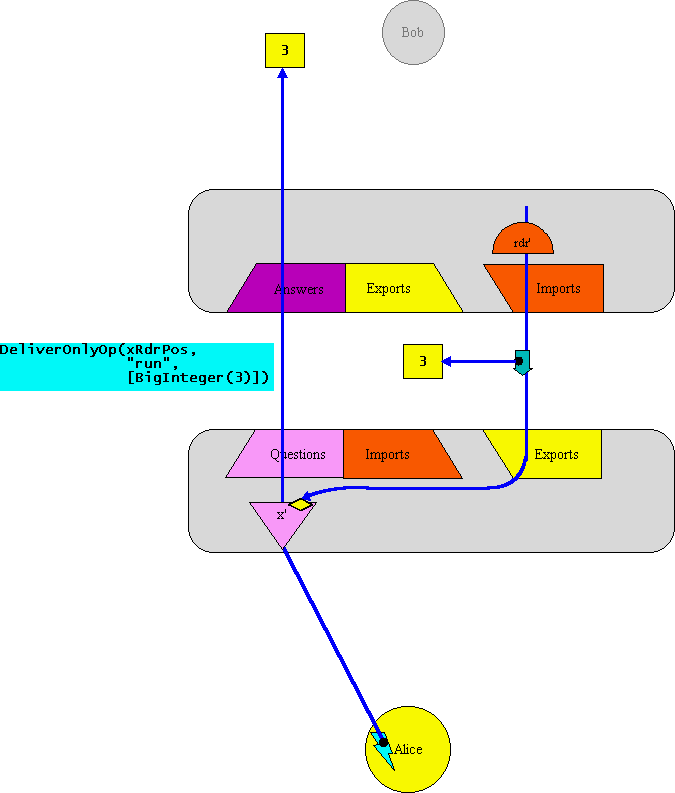

| |
CapTP
Ops: |
||||||
DeliverOp(answerPos :AnswerPos,
rdr :OneArgFunc,
recipPos :IncomingPos,
verb :MsgName,
args :any[]) |
Queue a delivery of verb(args..) to recip, binding answer/rdr to the outcome. answer := recip <- verb(args..) answer <- whenMoreResolved(rdr) |
An inter-vat eventual send which returns a promise for the outcome of the send.
Like DeliverOnlyOp, but also makes the result available at answerPos, and simulates the receiving of an immediately following
DeliverOnlyOp(answerPos,
"whenMoreResolved",
[redirector])
The following explanation assumes you've already read the DeliverOnlyOp page.
The imported far reference is expected to designate the redirector for resolving the question at the sending side's (Alice's) answerPos.
This corresponds to a remote message send in which the sender needs a promise for the outcome. In ELib this is expressed by using E.send(..) rather than E.sendOnly(..). Unlike E.sendOnly(..), E.send(..) is declared as returning a Ref.
Ref xVow = E.send(bob, "foo", carol);
In the E language, this is indirectly expressed by using a "<-" (eventual send) expression in a context where it is statically apparent that its value may be needed. (*** need to say this more precisely.) For example, the following send
def xVow := bob <- foo(carol)
clearly should be implemented as a send, since its result is needed.
For concreteness, we'll step through an example in which Carol is a PassByProxy object residing in the same vat as Alice, and in which the Bob's result in response to the "foo" message is the number "3", a PassByCopy object.
Example Scenario
Click here to position the first frame of the animation sequence. Then click on each diagram to proceed to the next diagram.
|
The bottom of this diagram is much like the corresponding diagram in DeliverOnlyOp. But where the other diagram has a indicating no place to report an outcome, this diagram has the Resolver facet of a promise-pair (arrowhead with halo). The promise facet of this pair (the arrowtail) is returned by the send operation to Alice's activation frame, and in this example, held in local variable xVow. The Resolver is the right to determine what object the arrowhead is pointed at, and therefore what object xVow will come to designate. As far as DeliverOp is concerned, the remote reference to Bob may be a Far reference or a RemotePromise, and (if it's a RemotePromise) it may be an import or a question. For concreteness, this example shows Bob as an imported Far reference. On receiving the message, the Far reference serializes the arguments for transmission to the other side. Any PassByCopy arguments are simply serialized so that identical copies will be unserialized. However, Carol, we are supposing, is a PassByProxy object, so Alice's vat registers her in the Exports table for this connection, thereby allocating her an export/import position. The outcome Resolver is not an argument to be serialized. (We could have treated it that way, but if we had, we'd lose the pipelining effect.) Instead, Alice's vat creates a new Question (a RemotePromise in VatA's Questions table) for Bob's to answer. The redirector facet of this question will be used to resolve it. This facet is itself an exported PassByProxy object entered into VatA's Exports table. |
|
The message is no longer represented out of in-address-space programming language material, but rather as encoded bits on the wire, in-flight to Bob's vat. The encoding is the integer that represents DeliverOp, followed by Bob's position in the Exports table, followed by the encoding of Carol. To represent the optimistic return result, two arguments are needed. xPos creates the arrow going from VatA to VatB, which directly represents the unresolved reference to the return result. Until this reference is resolved, messages sent on this reference will travel, as expected, from VatA to VatB. (Message sent on a reference travel towards the arrowhead in anticipation of eventually being delivered.) In addition, NewFarDesc(xRdrPos,xRdrSwiss) creates an arrow going from VatB to the redirector of this unresolved x reference. This is used by VatB to report the resolution of VatB's side of the x reference to VatA, in order for VatA to resolve its x' reference. |
|
This concludes the explanation of DeliverOp per se. We now continue with the scenario, so that we see an example of how DeliverOp set things up for other operations to proceed in its wake. Resolving the Promise for an AnswerThis network message is decoded into an in-address-space message made out of proganmming language material and eventually-sent to Bob. In other words, it is queued as if by "<-" for delivery to Bob. The argument of the decoded message is the Far reference to Carol that resulted from decoding the encoding of the NewFarDesc. The message is a send kind of message (rather than a sendOnly), in that it will report the outcome of the turn in which it is executed. |
|
For concreteness, let's say the outcome is the integer "3". In E, integers are PassByCopy objects. In fact the outcome could be anything, but since we already used Carol as an example of passing a PassByProxy object, this seems opportune. 3, being a normal (methodical) object, responds to the whenMoreResolved message by sending itself to the argument. For notational simplicity, the following diagram leaves out those elements no longer relevant. |
|
This "run(3)" message is sent back over the network to the redirector facet of xVow. Since a copy of "3" is sent, rather than a reference to the original "3", this copy is shown as traveling with the message. (In the textual representation of the network message, the 3 is shown as "BigInteger(3)" to represent the encoding that results from serializing the Java representation of 3 as an object.) |
| 
This "run(3)" message in unserialized, and a corresponding intra-vat message is eventually-sent to the redirector facet of xVow. |
|
The redirector reacts to this run(3) message by arranging for its xVow become a resolved reference to 3. In other words, all references to xVow are now references to 3, and xVow itself no longer exists as a separately designatible entity. In order to maintain E's partial ordering guarantees in the face of a possible race condition, the redirector will not generally be able to arrange for this in one step, as will be explained on Resolving RemotePromises. For simplicity here, we assume that no messages have been sent through xVow between it creation and its attempted redirection, so that it can know not to worry about the race condition. This special case allows the redirector to safely immediately redirect on reception of the run(3) message, as shown below. |
Distributed Acyclic Garbage Collection (DAGC)When the redirector redirects xVow, the position, xPos, occupied by xVow in VatA's Questions table and in VatB's Answers table can be deallocated as well. The entry in VatA's Questions table is immediately deallocated, and VatA sends a "GCAnswerOp(xPos)" to VatB. For a while now, in this scenario, VatB's far reference to the x redirector, shown as a half circle labeled rdr', has not been pointed at by anything else in VatB. As a result, VatB's local garbage collector will eventually notice that it is garbage and should be collected, and notify the local Imports table. (This requires a local garbage collector with finalization, which Java >= 1.2 fortunately provides well.) When the Imports table receives this notification, it does not deallocate its entry, for reasons explained below, but does send a "GCExportOp(xRdrPos, wireCount)" to the other side with its current wireCount, and then zeros its own wireCount. The wireCounts exists to solve a race condition problem that will be explained at GCExportOp, but in this scenrio it suffices to say that the sent wireCount will be "1". When VatA's Answers table receives the "GCAnswerOp(xPos)", it immediately deallocates its corresponding entry. The GCAnswerOp case is simple, because the same side -- the Questions table -- both allocates a position, decides to reuse it, and obtains the information that it is no longer locally needed, so the Answers table can simply follow the Questions table's instructions. Unfortunately, VatB's Import table's reaction to the local finalization notification cannot be as simple, and neither can VatA's Exports table's reaction to the resulting GCExportOp. The Exports table is where alocation and reuse decisions happen, so it also needs to be where deallocation decisions happen, or we get a difficult race condition. But we also create a race condition by having the Exports side make deallocation decisions in reactions to GC-finalization notifications received at the Imports table. Fortunately, this latter race condition is easily solved by the extra wireCount argument, as will be explained on GCExportOp. In the current scenario, the race does not occur, so VatA's Exports table, on receiving the "GCExportOp(xRdrPos, 1)", determines that the "1" is adequate, and deallocates the corresponding Exports table entry. Note that the Imports table does not deallocate the Imports table entry, since it doesn't know the Exports table's decision. However, should the Exports table reallocate that position, it will send a new NewFarDesc or NewRemotePromiseDesc to the Imports table reusing the same position, at which time the Imports table will overwrite its entry. Once all these steps have taken place, we are left in the state shown in the next diagram, which is stable but for the gray diamond redirector will be garbage collected by the local garbage collector. |
|
Each of the big diagrams is linked to the next in a loop. Now that you are at the end, click on the diagram, to see the first positioned properly, and then keep clicking to see the process "animate". On Windows98, this animation effect works better in Internet Explorer 5 than in Netscape Navigator 4.6 |
Unless stated otherwise, all text on this page which is either unattributed or by Mark S. Miller is hereby placed in the public domain.
| |
|
report bug (including invalid html)
|
||||||||